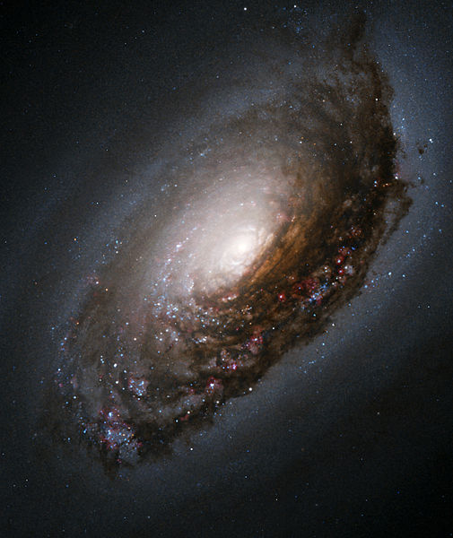

Guia das Galáxias

Galáxia de Olho Negro
Descrição
A Galáxia de Olho Negro (Messier 64, NGC 4826) é uma galaxia expiral localizada a aproximadamente 24.010.000 anos-luz (cerca de 5,2 Megaparsecs) de distância na direção da constelação da Cabeleira de Berenice.
Dados interessantes
- Os cientistas acreditam na hipótese de que ela seja o resultada da colisão entre duas galáxias.
- A Galáxia espiral foi descoberta por Edward Pigott em 23 de Março de 1779.
- Pode ser vista com bons binóculos